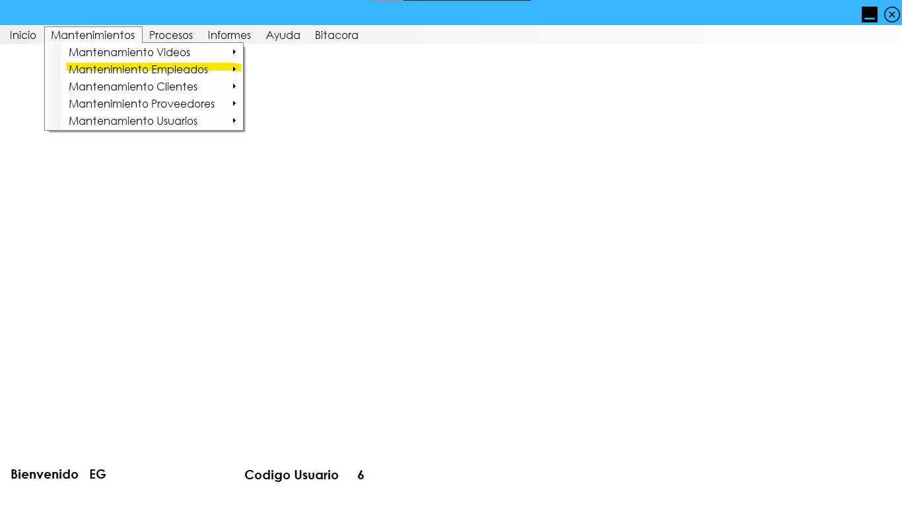
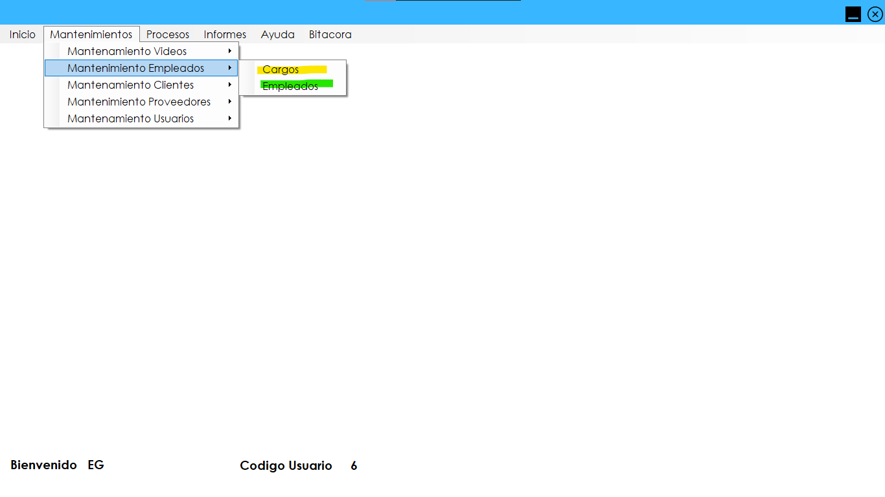

Para poder gestionar cualquier operación con empleados debemos dirigirnos al menú de "Mantenimientos" y luego seleccionamos la opción Mantenimiento Empleados.
En la siguiente Figura podremos observar las opciones que podemos seleccionar segun a los formularios que deseemos ingresar ya sea a "Cargos" o "Empleados".
